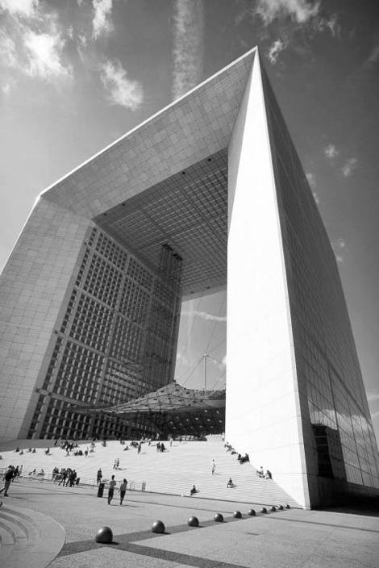

Şeylerin ve özelliklerinin
tuhaf doğası
İlk bakışta, “Uzayı ne doldurur?” sorusu felsefecilerin değil, fizikçilerin sorusudur. Etrafımızdaki dünyanın doğasını bize anlatan bilim değil midir? Ve uzayda yer kaplayan nesneleri en iyi tasvir eden bilim de fiziktir. Sonuçta bunlar onun konusudur.
Konunun felsefi bileşeni uzaysal nesneler ve onlara ilişkin bilgimiz üzerine düşünmeye başlar başlamaz, bir bulmacayla karşı karşıya kalmamızla ortaya çıkar. Bu bölüm bu bulmacaya bir giriştir. Sadece kan, ter ve gözyaşı vaat eden Winston Churchill gibi, korkarım, filozoflar da bu konuda sadece başağrısı vaat edebilirler. Bu belki de kitabın en zor bölümüdür. İsteyen bu bölümü atlayabilir, ama bu maden filizinde altın da bulunabilir.
Bilginin Alınması
Nesnelere ilişkin bilgimiz sonuçta duyu deneyimiyle gelir. Elbette fiziğin hakkında konuştuğu en temel şeylerin sandalyeler ve masalar gibi doğrudan duyulara açık şeyler olmadığı doğrudur. Bunların tespit edilmesi gelişkin aletleri gerektirir. İş bununla da bitmez. Bu aletlerin şeylere duyarlılıkları hakkında gelişkin teorilere ihtiyaç duyarız. Bu teoriler aletlerin bize söylediklerini yorumlamamızı sağlar. Ama nesneleri, aletlerle dolaylı olarak bildiğimizde bile, aletlerin gösterdiklerini bize söyleyen kendi duyu deneyimimizdir. Aynı durum başkalarının tanıklıklarına bel bağladığımız durumlar için de geçerlidir; onlar da bize bir şeyler öğreten az ya da çok güvenli aletler gibidir.

LA GRANDE ARCHE DE LA DEFENSE, Paris, Fransa (1982-1989)
Johann Otto von Spreckelsen (1929-1987)
Aslında alet kullanmak zorunda olmamız ya da nesneleri daha doğrudan algılamamız söyleyeceklerimizi pek değiştirmez. Her iki durumda da, şeylerin güçleri ve potansiyelleri bizi etkilediği için öğreniriz. Etrafımızdaki şeyler hakkında bir şeyler biliyorsak, bu sonuçta alıcı olduğumuz, ya da bu şeyler tarafından etkilenme özelliğine sahip olduğumuz içindir. Bunun nedeni de, şeylerin bize tesir eden gizilgüce sahip olmasıdır. Yüzeyi görmemizi sağlayan yüzeyin ışığı yansıtma gücüdür. Nesnenin girilmezliğini, ya da katılığını anlamamızı sağlayan nesnenin girmeye direnme gücüdür; nesneyi duymamızı sağlayan ses dalgalarını etkileme gücüdür.
Immanuel Kant da böyle düşündü, ama bunu kaygı verici buldu. Eğer nesneleri sadece başkalarının üstündeki potansiyel etkileri sayesinde bilebiliyorsak, o zaman biz onların ne olduklarına değil de sadece onların ne yaptığına tepki veriyoruz. Kant “başka özünlü özelliklerin olması gerektiğini” düşündü; “bunlar olmadan ilişkisel özellikler var olmazdı, çünkü bu durumda onlara sahip olan bir dayanak var olmazdı.” Ama “alırlığımız” veya “duyarlılığımız” sadece şeylerin güçlerine göre ayarlanmıştır. Bu özelliğimizin genelliği önemli bir sorunu gündeme getirmektedir: Bu altta yatan “dayanağı” nasıl bilebiliriz? Eğer Kant haklıysa onun var olması gerekir, ama onun hakkında hiçbir şey bilemeyiz. Bu gerçekten şok edicidir. Dünyadan bu kadar ayrı mıyız? 18. yüzyıl başında yazan Piskopos Berkeley de aynı kaygıyı dillendirmişti: Eğer, döneminin hâkim düşüncesinin öne sürdüğü gibi, bizler şeylerin içsel doğasından ziyade şeylerin etkilerini kaydediyorsak, o zaman gerçekten de göz kamaştırıcı “sahte bir hayalin içinde” dünyayla bağımız kopmuş demektir.
Güçler ve Eğilimler
Bu sav büyük deneysel fizikçi Michael Faraday’ın da aklına gelmiştir, ama o Kant’ın “başka özünlü özellikleri” olmadan da idare edebileceğimizi düşünmüştür. Farz edelim ki a parçacığını onun etkisini bilinir kılan m güçlerinden veya kuvvetlerinden ayırmak istiyoruz. Bu durumda olacakları Faraday şu sözlerle anlatıyor:
Bana göre… a veya çekirdek ortadan yok olur, ve töz güçlerden, veya m’den, meydana gelir. Güçlerinden bağımsız bir çekirdekle ilgili nasıl bir mefhum oluşturabiliriz? Tasdik edilen güçlerinden bağımsız bir a’ya ilişkin imgenin tutunabileceği bir düşünce kalır mı? Öyleyse, hakkında tamamıyla bilgisiz olduğumuz, kavrayamadığımız ve kendisi için hiçbir felsefi gerekliliğin söz konusu olmadığı bir şeyin varlığını niçin varsayalım ki?
Burada ortaya koyulan sorun şudur: “Güçlerden meydana gelen töz” fikriyle tatmin olabilir miyiz, yoksa Faraday’ın düşündüğünün tersine, bu güçlere fiili olarak sahip olan ayrı bir tözün (bir çekirdeğin ya da bir şeyin) var olduğunu varsaymamız için felsefi bir gereklilik var mı?
Kant ve Faraday’ın şeylerin güçlerinin, şeylerin kurulma ya da teşkil edilme biçimlerine dair başka olgulara başvurarak açıklanması gibi son derece bildik olan bir fenomenden kuşkulanmadıklarının farkında olmak önemlidir. Saatin dakik işleme gücünü, hareketi göstergelere ileten zemberekler, çarklar ve mekanizmalardan yapılmasına bağlayabiliriz. İyi de sorun bu süreci nasıl düşünmemiz gerektiğiyle ilgili. Eğer bir dişli çarkı elime alabiliyorsam, elimdeki şey diğerlerinden ayırt edebildiğim bir şeydir. Nasıl? Görerek (yansıyan ışıkla) ve dokunarak (girilmezliği ve bende bıraktığı katılık hissiyle). Güçleri beni etkilediğinden onun hakkında hiç tereddüde düşmeden hükümlerde bulunabilirim. Çarkı döndürdüğümde her dönüşte aynı etkileri almaya devam ederim. Bu etkiler sayesinde çarkın konumuyla ilgili yargılarda bulunabilirim. Bütün bunlarda söz konusu nesnenin üzerimdeki etkilerini hissederim ve bunları onun sahip olduğu güçlere bağlarım.
Ama Kant’ın özünlü özellikler kategorisine ihtiyacımız olduğunu destekleyen bir kanıtlama daha vardır. Bu kanıtlamadan Bertrand Russell Maddenin Analizi adlı kitabında bahseder: “Şimdiye kadar ‘gerçek’ sayılmış şeyleri salt başka şeylerle ilgili yasalara çevirmenin olası birçok yolu vardır; bu sürecin bir sınırının olması gerektiği açıktır, yoksa dünyadaki her şey sadece birbirinin tezahürü olur.” Buradan çıkan sonuç şudur: Şeyleri güçlerinden ayrı olarak anlama konusunda sıkıntılarımız olsa da onlara ihtiyacımız var. Peki neden? Onlara ihtiyacımız var çünkü aksi takdirde fiili dünyaya ilişkin hiçbir kavrayışa sahip olamayız.
Koşullu Testler
Russell’ın sorunu “güçler” mantığını biraz daha düşününce iyice belirginleşir. Güçlerin tezahürlerini edimsel işlerde görürüz. Onlar “koşullu önermeler” ya da başka bir deyişle, “eğer X ise o zaman Y” biçimindeki önermelerin test edilmesiyle görülür. Bir şeyin kuvveti şu koşullu önermenin test edilmesiyle görülür: “Eğer onunla ağır bir yükü kaldırmaya yeltenirseniz, bunu kaldırır.” Bir bardağın kırılganlığı şu koşullunun test edilmesiyle görünür: “Eğer yere bırakılırsa, kırılır.” Bir yerin işgal edildiğini nasıl görürüz? “Eğer onu doldurmaya kalkışırsanız, dirençle karşılaşırsınız.” Eğer bir test parçacığı değişik yerlere koyulursa, değişik kuvvetler onun üzerinde –örneğin onu ivmelemesiyle ve yön değişikliğiyle görünür olan– etkide bulunur; bu da bize bir kuvvet alanının uzamı doldurduğunu gösterir. Şimdi bu anlayışın çıkardığı soruna bakalım. Bu güçlerin aracılıklarıyla açığa çıktığı olayların başka güçlerdeki değişimlere çözündüklerini varsayalım. Bu bir test parçacığının bir güçler takımından başka bir şey olmadığı anlamına gelir. Bu da sürekli ertelenen koşullularla baş başa kalmak demektir: eğer gözlerinizi ya da bir aleti uygun bir şekilde ona yöneltirseniz bir etkiyle karşılaşırsınız, ama bu etki hemen başka bir koşullunun devreye girmesine neden olur. Bu durumda “eğer… o zaman…” iddialarının sonsuz gerilemesiyle karşı karşıya kalırız, ve asla son bulmayan bir süreç içinde edimsel olarak doğru olana hiç ulaşamayız.
“Eğer parmağınızı elektrik prizine sokarsanız, çarpılırsınız” koşullusunu ele alalım. Bunu parmağımızı prize soktuğumuzu varsayan bir senaryo, ya da filozofların tabiriyle “mümkün dünya” hayal ederek test ederiz. Eğer bu senaryoda çarpılırsanız, o zaman koşullu doğru kabul edilebilir. O halde, “eğer… o zaman…” önermeleri hayali senaryolar içinde doğru olanlar sayesinde doğrudur. Şimdi edimsel dünyamız hakkında doğru olan her şeyin güçler hakkındaki önermelere dönüştürüldüğünü farz edin. Ve güçlerin “eğer… o zaman…” önermelerinin doğruluğuna tekabül ettiğini farz edin. Söylediğimiz gibi bir dünya hakkındaki bir “eğer… o zaman…” önermesinin doğru olması, hayali senaryolarda neyin doğru olduğuyla ilgili bir sorundur. Bu durumda doğruluk sonsuzca ertelenmektedir. Şöyle ki: Bir önermenin doğru olması bir hayali senaryoda neyin doğru olduğuyla ilgili bir meseledir, ama bu hayali senaryoda doğru olanların doğruluğu da başka bir hayali senaryoda neyin doğru olduğuna bağlıdır, ve bu sonsuzca devam eder. Russell’ın söylediği gibi, bu sürecin bir sınırı olması gerekir, yoksa hiçbir şey hiçbir yerde doğru olamaz!
Zeminler
Durum buysa, belki de Faraday haksız, Kant haklıydı. Güçlerin kendisi kadar bir tikele, bir töze, ya da filozofların jargonuyla söylersek, bu güçler için “kategorik bir temele” ihtiyacımız var. Bu güçlerin ya da eğilimlerin “zeminlerinin” olduğunu düşünüyoruz. Boş bir uzam ve sadece güçleriyle farklı olan iki bölge düşünün. Eğer bunlardan birine giderseniz dirençle, elektik çarpmasıyla ya da başka etkilerle karşılaşıyorsunuz. Bu durumda orada farklılığı açıklayacak bir şeyin, iki bölge içinde ya da onların içinde var olduğu civarda özünlü bir farklılığın var olduğunu düşünmez miydik? Yanlarına bir şey yaklaşmadığı sürece onlar her yönüyle özdeş görünürler, ama yanlarına bir şey yaklaştığında sistematik olarak farklı sonuçlar üretirler. Onların farklı güçlere sahip olmasını sağlayan kalıcı bir şey olmak zorundadır. Ya da öyle kabul ederiz. Ama o zaman, bu “şey”e ya da “çekirdeğe” ilişkin nasıl bir fikre sahip olabiliriz?
Kimi filozoflara göre “kategorik özellikler” eğilimsel özelliklerdir. Bu Faraday’a karşı şunu önermek demektir: Kayıp çekirdek ya da parçacığın kendisi bir kuvvet alanı, ya da başka bir deyişle, yol açtığı “eğer… o zaman”lar toplamıdır. Ama bu tür teorinin bedeli eğilimlerin ve güçlerin zeminini kategorik özellikler uyarınca düşünmemizi imkânsız kılmasıdır. Zira onların kendileri de eğilimlerden ve güçlerden başka bir şey değildir! Oysa herhangi bir şeyin zemininin o şeyden farklı, yeni bir şey olması gerekir. Bir parçacık, bir töz, bir dayanak varsayarken doğasının ve konumunun kuvvet alanını açıklamasını umuyoruz. Bunu sağlayacak bir yol bulamazsak, Russell’ın “tezahürün tezahürü” sorunuyla karşı karşıya kalırız.
Russell haklıydı. Bu doğal dünyaya dair hiç de doyurucu ve sağlam bir anlayış değildir. Daha açık söylemek gerekirse sadece potansiyellerin ya da güçlerin ontolojisiyle yetinemeyiz. Böyle bir ontolojide bir şey, güçler mahallinden başka bir şey değildir. Biraz daha farklı ama daha kesin bir şekilde söylemek gerekirse, bu ontolojide içinde bir şey bulunan bir uzay bölgesi, içinde bir şey bulunmayan uzay bölgesinden sadece potansiyeliyle ayırt edilir. Peki, bu güçler neler yapabilir? Başka nesneleri yollarını değiştirerek, elektrikle yükleyerek, ısıtarak ya da soğutarak etkilerler. Ama bu olaylar da başka uzay bölgelerinin potansiyelini değiştirebilme potansiyelindeki değişikliklerdir. Bir potansiyelin gerçekleşmesi ya da tezahürü başka potansiyellerdeki bir değişimdir. Hakikat gelen ve giden potansiyeller hakkında doğru olanlarla tüketilir. Bütün fiziksel evren büyük bir pus altında kaybolur, tamamen potansiyel bir varlığa dönüşür.
Resme Giriyoruz!
Biraz umutsuz bir öneriye göre, salt potansiyel olandan katışıksız kategorik olana biz resme dahil olduğumuzda geçeriz. Bir şeyin diğer bir şey üstündeki etkilerinin tamamen farklı uzay hacimleriyle bağlantılı değişen güçlerle ilgili bir mesele olduğunu kabul edebiliriz. Ama fiziksel bir gücün uygulandığı alıcı biz olduğumuzda, etki sadece bizim potansiyellerimizde olan bir değişim değildir; deneyimimizdeki bir değişimdir, görünüşteki veya hislerdeki kategorik veya özünlü bir değişikliktir. Varsayalım ki bir yüzey kırmızı ışığı başka her şeyden daha çok yansıtıyor ve bu nedenle de kırmızı görünüyor. Ona baktığımda edindiğim kırmızı deneyimi kesinlikle kategorik bir deneyimdir. Benim içsel manzaramda hissedilen bir değişimdir. Potansiyel bir değişimi hissetmek gibi değildir; kendini güçsüz ve bitkin olmak yerine coşkulu ve enerjik hissetmeye başlamak gibi değildir. Bu şeylerin başka bir şey olursa nasıl olacağından ziyade benimle birlikte olma tarzlarında meydana gelen bir değişimdir.
Belki de doğrusu şudur: Sırf potansiyel olana ve kendileri de salt potansiyel değişiklikler olan başka olaylar tarafından gerçekleştirilmeyi bekleyene karşıt olarak, kategorik veya özünlü olana ilişkin hissimizi kendi deneyimimiz üzerine düşünerek elde ediyoruz. Ama kendi deneyimimiz potansiyellerin “zemin”i olmaya hiç de uygun değildir. Sahneye dahil olduğumuzu ve bu potansiyellerin deneyimimizde açık patlama, aydınlanma, renk, koku, ses veya tat şeklinde gerçekleşeceğini düşünsek bile, sonuçta elimizde yine birbirinden sadece potansiyelleriyle farklı olan iki farklı uzay bölgesi kalacaktır.
Belki de doğru olan budur. Belki de Faraday, Kant ve Russell’ı yeniyor ve en azından farklı güçlerde uzay veya uzay-zaman hacimlerinden başka bir şey olmayan fiziksel dünyayla uzlaşmamızı sağlıyor. Belki de biz sahneye çıkana kadar gerçekten de hiçbir şey vuku bulmuyor, ve bizler kuantum teorisinde “dalga paketinin çökmesi” denilene benzer bir şeye sahibiz; gerçek bir kategorik olayın aniden zuhur etmesini biz sağlıyoruz, ama biz gözlemlediğimizde bu dalgalar çökerek parçacık haline geliyor. Biz onları gözlemleyinceye kadar sadece olasılık dalgaları, potansiyeller veya imkânlar var. (Ama sadece potansiyeller, imkânlar veya olasılıklar dizisinden oluşan bir evren tahayyül edebilir miyiz?)
Isaac Newton 1687’de Principia Mathematica adlı eserinde evrensel kütleçekim yasasını formüle ettiğinde bilim dünyası hem çok heyecanlandı hem de hayal kırıklığına uğradı. Biliminsanlarına göre, Newton yer çekiminin ne yaptığını göstermişti, ama onun gerçekte ne olduğunu göstermemişti. Newton başka bir şeyin daha gerekli olduğu idealini paylaşıyor, ama kendisini yaptığı şeyin kuvvetler, hareketler ve ivmelere ilişkin fenomenlerin en iyi tasviri olduğunu söyleyerek savunuyordu – gerçekten de öyleydi. Keşfedilmesi gereken daha başka bir şeyin olması gerektiği fikriyle ilgili Newton şunları söylüyordu:
Kütleçekimin maddeye içkin, içsel ve özsel olması, netice itibarıyla bir cismin diğerini boşluk içinde, başka hiçbir şeyin aracılığı olmadan uzaktan etkileyebilmesi, boşluk vasıtasıyla onların hareketinin ve kuvvetinin birinden diğerine iletilebilmesi bana göre öyle büyük bir saçmalıktır ki felsefi meselelerde ehil bir düşünme yetisine sahip olan hiç kimsenin bu saçmalığa düşmeyeceğine inanıyorum.
Newton bu pasajda orada doğru olan ile burada doğru olan arasındaki yalnızca deneysel ilişkiye dayanan temellendirilmemiş bağlantıyla ilgili hoşnutsuzluğunu dile getiriyor. Ona göre burada bir kütle olduğunda, orada ivme kazanmış bir hareket varsa, o zaman etkinin meydana gelmesine aracılık eden “bir şey” olmalıydı. Bu durumda bu uzay bölgesinin, başka bir uzay bölgesindeki değişim tarafından takip edilme gücüne, potansiyeline veya olasılığına sahip olduğunu söylemek kâfi olmayacaktı. Ama bu bölümdeki düşünceler kabul etmemiz gerekenin tam da bu olabileceğini ima etmektedir: Baştan aşağı güçlerden başka bir şey yok.
Sizlere kan, ter ve gözyaşı vadettim. Sonunda elinize geçen tam da bunlar olduysa bağışlayın. Ama hiç olmazsa şimdi biraz daha aydınlandık.